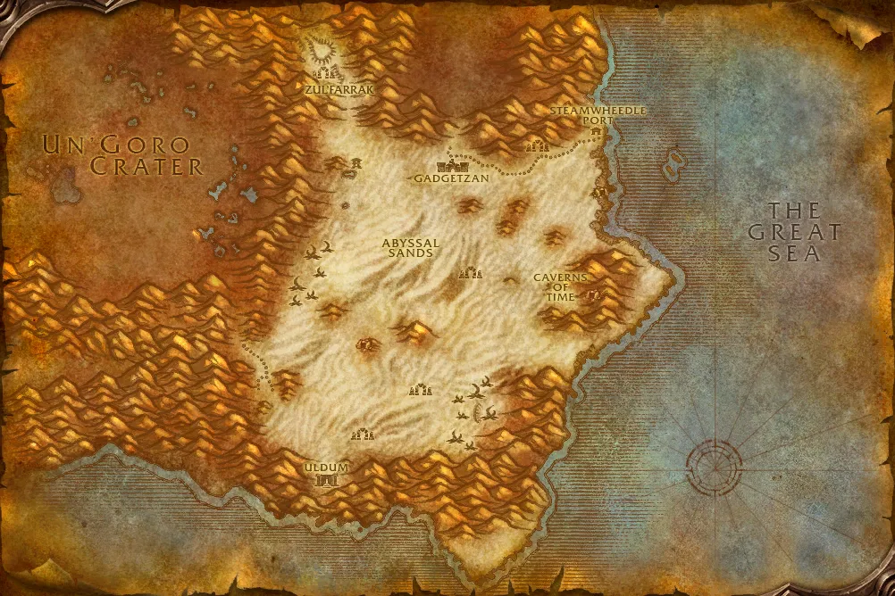

Accès
 Entrée Tanaris 38.7, 20.1
Entrée Tanaris 38.7, 20.1 5 joueurs · niveaux 40 à 47
5 joueurs · niveaux 40 à 47 10 quêtes · 4 boss
10 quêtes · 4 boss
Le point rouge marque l'entrée du donjon.
Toutes les zones sont sur notre carte interactive.
La cité des trolls des sables, au cœur du désert de Tanaris.
📅 Mise à jour le 4 novembre 2026🛠 Patch 1.60.1.70755

Entrée Tanaris 38.7, 20.1 5 joueurs · niveaux 40 à 47 10 quêtes · 4 bossLe point rouge marque l'entrée du donjon.
Toutes les zones sont sur notre carte interactive.
| Objet | Type |
|---|---|
| Grands méchants espauliers | Épaules |
| Massacreur du chef | Deux mains |
| Refendeuse | Main droite |
| Etreinte du lycan | Tête |
| Jang'thraze le Protecteur | Main droite |
| Coeur flétri | Cou |
| Objet | Type |
|---|---|
| Canne de Zum'rah | Deux mains |
| Poignes de Jumanza | Mains |
| Coeur flétri | Cou |
| Objet | Type |
|---|---|
| Sang'thraze le Déflecteur | Une main |
| La main d'Antu'sul | Main droite |
| Poignes de fer | Mains |
| Amulette vampire | Cou |
| Coeur flétri | Cou |
| Objet | Type |
|---|---|
| Protège-chevilles de traqueuse des sables | Pieds |
Butin d'après les données de WoW Classic : Forever a ajouté de nouveaux objets dans les donjons, la liste sera complétée en jeu. Seuls les objets de qualité inhabituelle et mieux sont listés. Passe la souris sur un objet pour voir ses caractéristiques (info-bulle Wowhead), ou clique pour ouvrir sa fiche.
Donnée par : Trenton Lighthammer (Tanaris)
Donnée par : Maître Gadrin (Durotar)
Donnée par : Tran'rek (Tanaris)
Donnée par : Krazek (Vallée de Strangleronce)
Donnée par : Anastasia Hartwell (Fossoyeuse), Bink (Forgefer), Jennea Cannon (Hurlevent), Deino (Orgrimmar)
Donnée par : Tabetha (Marécage d'Âprefange)
Récompense : Bâtonnet d'altération · Espauliers de schiste précieux
Donnée par : Yeh'kinya (Tanaris)
Donnée par : Ingénieur en chef Bilgewhizzle (Tanaris)
Récompense : Anneau de la fraternité des maçons · Couvre-chef de la guilde des ingénieurs
Donnée par : Thadius Grimshade (Terres foudroyées)
Donnée par : Wizzle Brassbolts (Mille pointes)
Récompense : Carotte et bâton
Noms des quêtes, des PNJ et des objets d'après les données du jeu (Polestar, CC BY 4.0, et Factoruide/Questie).